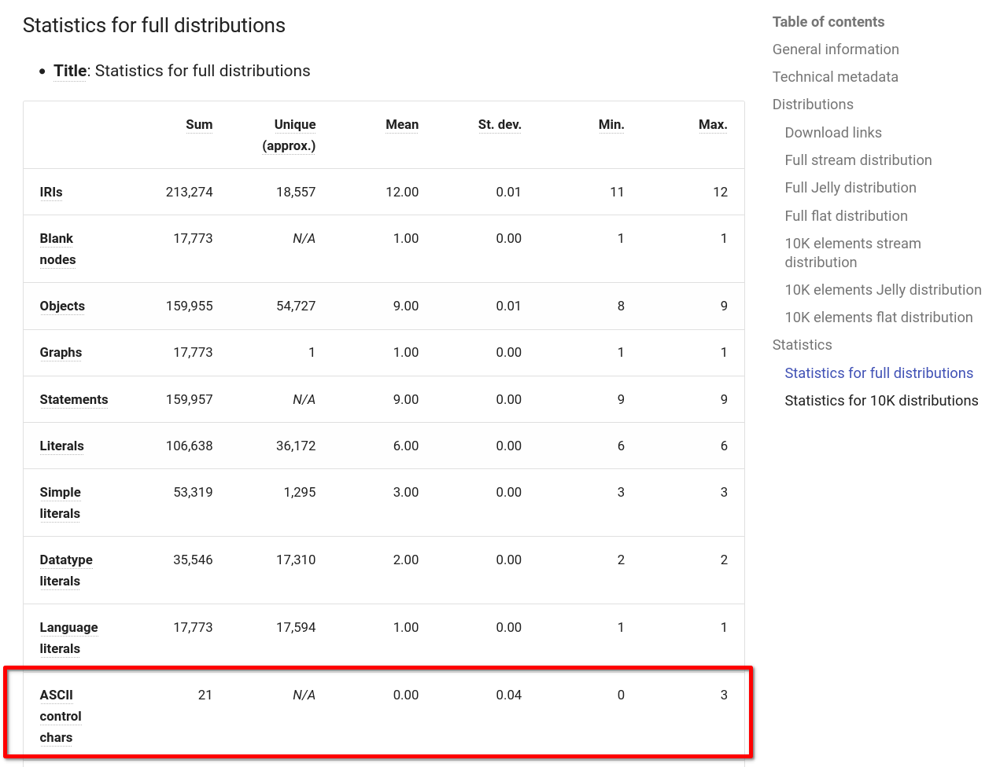

Dataset compatibility notes
RiverBench uses the RDF 1.1 specification as its compatibility basis. However, life is never that simple. This page explains the various quirks in RDF 1.1 support across different systems, as well as its extensions and non-standard features.
ASCII control characters and RDF/XML
RDF 1.1 allows any valid Unicode string to be used as the lexical value of an RDF literal (see the spec). This notably includes all ASCII characters from 0x00 to 0x1F, which are commonly referred to as ASCII control characters.
A few of these characters are troublesome some RDF systems. The most notable example of this is the RDF/XML 1.1 serialization format which uses XML 1.0 as its basis. XML 1.0 disallows using certain ASCII control characters in XML documents, and at the same time it also disallows using the &#xHH; escape sequences for these characters. This means that XML 1.0 and, in turn, RDF/XML 1.1 cannot represent these characters at all.
Namely, the following characters cannot be encoded in RDF/XML 1.1:
0x00-0x080x0B0x0C0x0E-0x1F
It should be stressed here that literals using these characters are completely valid according to RDF 1.1, and there are real-life use cases where these characters may occur. For example, in datasets with web-scraped data, such as politiquices, nanopubs, or openaire-lod, such "ugly" strings are common.
As the issue concerns only one serialization format (and a "legacy" one at that), RiverBench took the decision to keep these characters as-is in its datasets, to accurately represent the original data. This means that some datasets may not be fully representable in RDF/XML 1.1. Instead, RiverBench computes the number of such characters in the dataset and publishes this information in dataset metadata and documentation.
In the metadata, the rb:AsciiControlCharacterCountStatistics class is used to represent the number of ASCII control characters in the dataset. This count includes only the characters problematic for RDF/XML 1.1, as indicated above. These statistics are also displayed on the dataset pages (example from politiquices):

RDF/XML 1.2
Although RiverBench does not support RDF 1.2 (as it is not finalized yet), it is worth mentioning that RDF/XML 1.2 will upgrade to XML 1.1, which added support for escaping the aforementioned characters, except for 0x00. This means that RDF/XML 1.2 will still technically not be able to represent all RDF literals, but at least the range of incompatible characters will be much smaller.
RDF-star
RiverBench also includes datasets that use RDF-star, an unofficial extension of RDF 1.1. To determine conformance, RiverBench uses the RDF-star Final Community Group Report 17 December 2021 as the reference document. Datasets using RDF-star are marked as such in the metadata and documentation, and are present only in *-rdfstar benchmark profiles.
It is expected that the functionalities of RDF-star will be integrated into RDF 1.2, and that the current RDF-star-enabled datasets of RiverBench will be fully compatible with the new standard. This, however, depends on the final form of RDF 1.2.
Other non-standard RDF features
RiverBench welcomes datasets that extend RDF 1.1 in other ways, such as using generalized triples, or introducing something entirely new. In that case, such a dataset will be appropriately marked and placed in a separate nonstandard benchmark profile. When submitting your dataset, you will have the option to point out any non-standard features of your dataset.